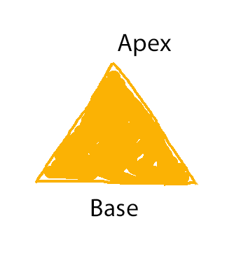
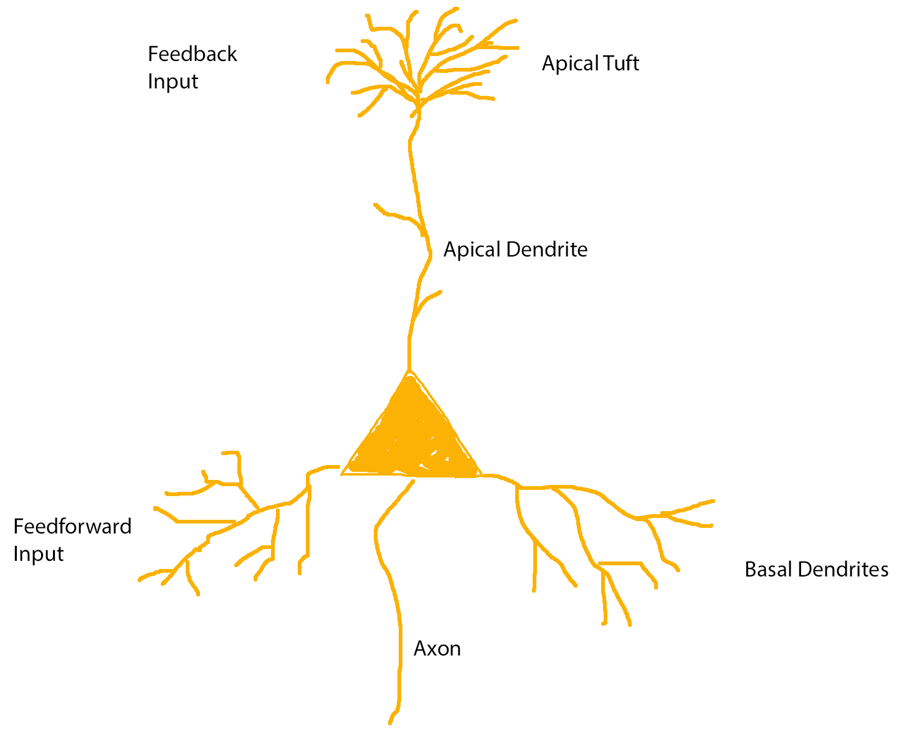

Contents:
General Terminology
Afferent vs Efferent Neurons
In an effort to create sane and non-confusing terminology, neuroscientists have decided to call neurons that receive sensory input and transmit it to the central nervous system
afferent neurons, while neurons that send information in the opposite direction are called
efferent.
Coincidence Detection
Since a coincidence is by definition meaningless it seems pointless to want to detect them. With a more literal definition of thet word, it becomes clear that we are trying to detect inputs that coincide, i.e. are arrive at approximately the same time.
Pyramidal Neurons
Pyramidal neurons are the most abundant type of neuron in the neocortex, constituting about 70-85% of cells
[0]. In contrast to the remaining neurons in the neocortex, so called
interneurons, which are inhibitory, pyramidal neurons are excitatory
[0].
As the name suggests, pyramidal neurons have a cell body (or
soma) shaped like a pyramid. This cell body is said to have a
base at the bottom and an
apex at the top.

Pyramidal neurons have two groups of dendrites:
basal dendrites, originating at the base of the soma, and one
apical dendrite, originating at the apex of the soma. This apical dendrite terminates (not always, but mostly in layer 1
[0]) in what is called the
apical tuft.
These apical and basal dendrites are not just differently located, they also appear to serve different functions.
Basal dendrites receive regular feed-forward input, while the apical tuft dendrites receive feed-back input.

The dendrites branching off from the main apical dendrite are called oblique dendrites.
There appear to be two action potential initiation zones, one near the axon and on near the tuft.
[0] DeFelipe, J., & Fariñas, I. (1992). The pyramidal neuron of the cerebral cortex: morphological and chemical characteristics of the synaptic inputs. Progress in Neurobiology, 39(6), 563–607. http://doi.org/10.1016/0301-0082(92)90015-7